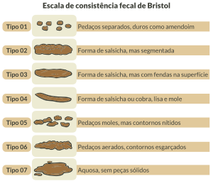
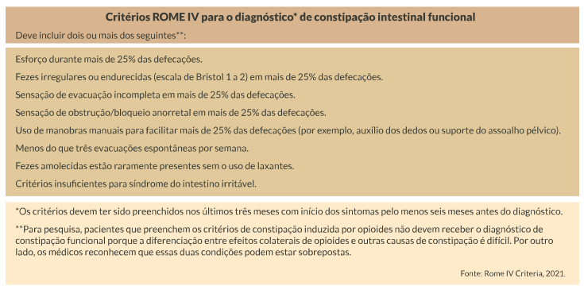

A constipação pode ser funcional ou de trânsito lento.
Lenta
Funcional
Tratamentos
Clique em cada um dos títulos.

Na constipação de trânsito lento o paciente costuma evacuar até uma vez por semana. Há um movimento vagaroso das fezes ao longo do intestino grosso. O desconforto abdominal e a flatulência também podem estar presentes, mas, em geral, o paciente não se queixa de fezes endurecidas. Este paciente não vai responder apenas com o aumento de fibra e o aumento da ingestão hídrica.
A escala de Bristol é um instrumento desenvolvido na Universidade de Bristol, na Inglaterra. Os tipos 3, 4 e 5 são considerados normais, enquanto os tipos 1 e 2 são compatíveis com constipação intestinal e os tipos 6 e 7 com diarreia.
Clique na imagem para ampliá-la.
A funcional é a mais comum nos pacientes. Possui um trânsito intestinal normal, mas as fezes são endurecidas ou o paciente queixa-se de sensação incompleta de evacuação, além de queixa de desconforto abdominal e flatulência. Geralmente respondem bem à adição de fibras à dieta e à melhor hidratação. A constipação crônica idiopática ou funcional pode ser diagnosticada por meio dos critérios ROME IV.
Clique na imagem para ampliá-la.

Tratamento
O tratamento da constipação intestinal envolve uma abordagem multifacetada, frequentemente iniciando com mudanças no estilo de vida e na dieta. Recomenda-se o aumento da ingestão de fibras, tanto de fontes alimentares quanto de suplementos, para promover o amolecimento das fezes e facilitar o trânsito intestinal. Aumentar a ingestão de líquidos, praticar atividade física regularmente e estabelecer uma rotina regular para evacuação também são estratégias importantes. Além disso, medicamentos laxativos, prescritos ou de venda livre, podem ser utilizados temporariamente para aliviar os sintomas.
Tratamento fitoterápico
Algumas plantas medicinais podem ser utilizadas no tratamento da constipação intestinal. Na
constipação de trânsito normal, as plantas umectantes ou ricas em fibras podem ser usadas.
Nos
quadros de constipação com trânsito lento, podem ser usadas as plantas com ação colerética,
colagoga
ou anticonstipante. Exemplos de plantas medicinais que podem ser usadas na constipação
intestinal:
• Plantago ovata ou Plantago indica (Plantaginaceae) (psyllium).
• Tamarindus indica (Fabaceae) (tamarindo).
• Cynara scolymus (Asteraceae) (alcachofra).